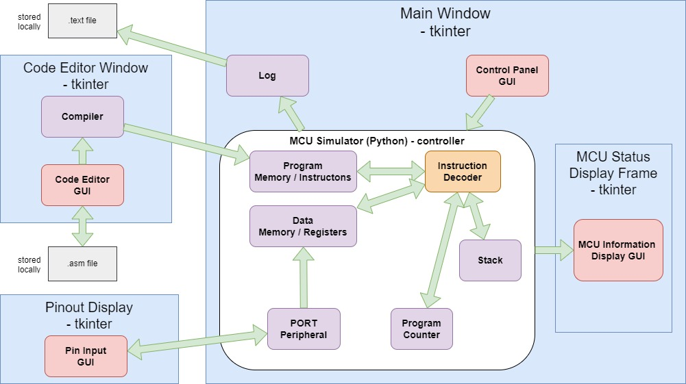

Microcontroller Simulation
The objective of this project was the creation of a self-contained desktop application that simulates the behaviour of a microcontroller, offering a user an interactive learning experience of low-level computer architecture. The application was designed with an emphasis on simplicity and accessibility. The graphical elements of the application are deliberately kept minimal to ensure a lightweight footprint on a user's system.
 Given the inherently modular nature of microcontroller functionality, the project adopts an object-oriented programming (OOP) model to represent the distinct roles within the microcontroller's internal architecture.
Microchip’s PIC®16C712 microcontroller (PIC16) was selected as the ‘blueprint’ design for the functionality of the simulation. This decision was based on several factors, including its relatively small instruction set of 35, and the extensive and readily available documentation.
 For the graphical user interface (GUI), a windows based design was chosen to provide a user friendly environment for learners to interact with. Tkinter, Python's standard GUI toolkit, was chosen as the primary tool for the GUI implementation, and as Python supports OOP principles it was also used to implement the logic.
In essence, this project aims to create an accessible and educational tool that enables learners to explore the intricacies of low-level programming within a microcontroller environment. By utilising OOP and using Python’s tkiniter GUI tools, the project aims to deliver a straightforward and engaging learning
For the graphical user interface (GUI), a windows based design was chosen to provide a user friendly environment for learners to interact with. Tkinter, Python's standard GUI toolkit, was chosen as the primary tool for the GUI implementation, and as Python supports OOP principles it was also used to implement the logic.
In essence, this project aims to create an accessible and educational tool that enables learners to explore the intricacies of low-level programming within a microcontroller environment. By utilising OOP and using Python’s tkiniter GUI tools, the project aims to deliver a straightforward and engaging learning